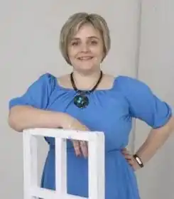

Народилася у переддень нового року, 31 грудня 1979 року на Далекому Сході, в місцях, куди українці з'їжджалися ще з часів скасування кріпосного права, а колись навіть хотіли заснувати Далекосхідну Українську Республіку, не вдалося, — на Зеленому Клині. Приїхала з батьками до Луцька, а потім тут же й училася, закохувалася, отримувала спеціальність, вийшла заміж, народила усіх трьох дітей, почала писати казочки, віршики. З 1990 року брала участь в пластових акціях, бувала на перших пластових таборах в Україні, тепер відійшла від активного пластування, проте зв'язки не втрачені.
З 2002 року працювала вчителькою хімії в одній з Луцьких шкіл. Вчителювання — не тільки робота, а й хобі, захоплення і спосіб життя.
Три роки жила і працювала в Києві, в школі і в редакції малесенького видавництва, з тих пір Київ залишився улюбленим місцем і містом на планеті. З 2014 живу в Китаї, в маленькому (півмільйонному) містечку Піньху, провінції Джедзянг, неподалік Шанхаю. Джерело: https://starylev.com.ua/old-lion/author/yulya-smal